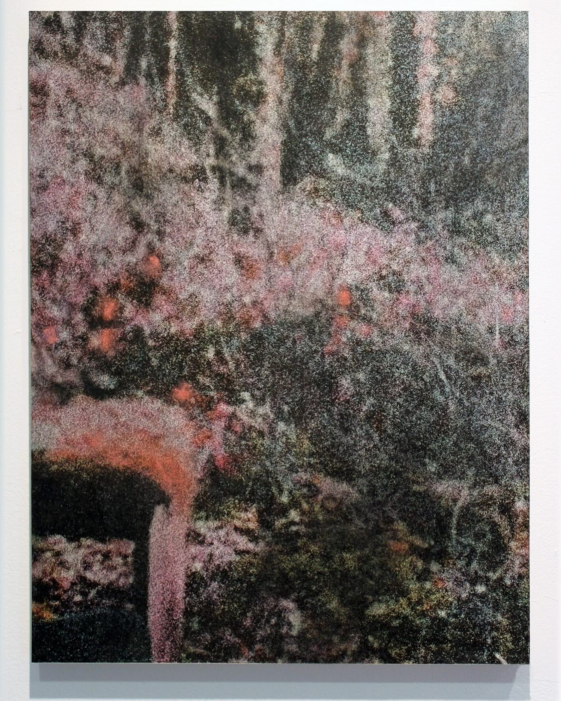

Emily Rose Wright paints images that look like they survived something. With her work headed to Art Basel Miami Beach 2026 with Harkawik, here is where she came from and what she has been doing since Bushwick first saw her paintings.
From photocopier to canvas
Wright was born in Seattle in 1999 and earned her BFA in painting from the Rhode Island School of Design in 2022. Her route into painting started with destruction. For years she ran digitally altered drawings through a photocopier again and again until each image broke down into grain and noise. She now paints every day, and that history shows: her surfaces carry the speckled texture of an image copied past recognition, while an arm or a brow surfaces only partway before dissolving back into the field.
New York saw the work early. In December 2022, months out of RISD, ZXY Gallery in Bushwick presented an exhibition of her work, introducing it as "dour, largely monochromatic and hauntingly evocative vignettes" built from layered, procedural textures. The description came from a small gallery's Instagram post, but it still fits what she is making now. She posts her own work on Instagram as @gridrot.
How and why she paints
Wright works in oil, and the glitch in her pictures is made by hand. Harkawik's exhibition text for Destroyer says her paintings take on the look of digital error while being composed entirely with traditional means. In the gallery's account she composes and destroys an image in a single gesture, working toward halting, incomplete recollections and the fragile nature of memory. It describes a feedback loop that begins with loss, grief and uncertainty and grows more forlorn and enchanting with each cycle, so that what looks improvised is often carefully built, and the reverse. The photocopier years supplied the method: keep going back to an image until it gives way. The text for Echo Night adds that her pencil lines and underpainting show through as slivers of paintings that once were, and that ghosts appear in her pictures as daily facts of life rather than hazy reminders of the departed. Paul Laster, in Galerie, saw figures in garden settings, women and children from times past, blurred like glitches and recalling the Nabis painters Bonnard, Denis and Vuillard. These are the gallery's and a critic's readings of the work, not Wright's own statement of intent.
What she has done since
Harkawik has mounted two solo exhibitions of her work: Destroyer in Los Angeles in February and March 2025, and Echo Night in New York that October. Harkawik has also taken her to Felix Art Fair in Los Angeles twice: in 2025, and again in 2026, when it showed her alongside Polina Barskaya in The world is good but not entirely at the Hollywood Roosevelt Hotel, February 25 to March 1. Writing for Galerie Magazine, Paul Laster named her one of the eight emerging artists who made a splash at Felix and Post-Fair in Los Angeles, and her work has appeared in the White Columns Benefit Auction. In 2026 she also showed at Art Basel Hong Kong with Don Gallery.
Miami in December
Next month Wright shows with Harkawik at Art Basel Miami Beach 2026, where she appears in the fair's exhibitor listing under the gallery. The fair runs December 4 to 6 at the Miami Beach Convention Center, with invitation-only preview days on December 2 and 3. Her page on Harkawik's site also lists an exhibition titled Gut Hunting for December 2 to 6.